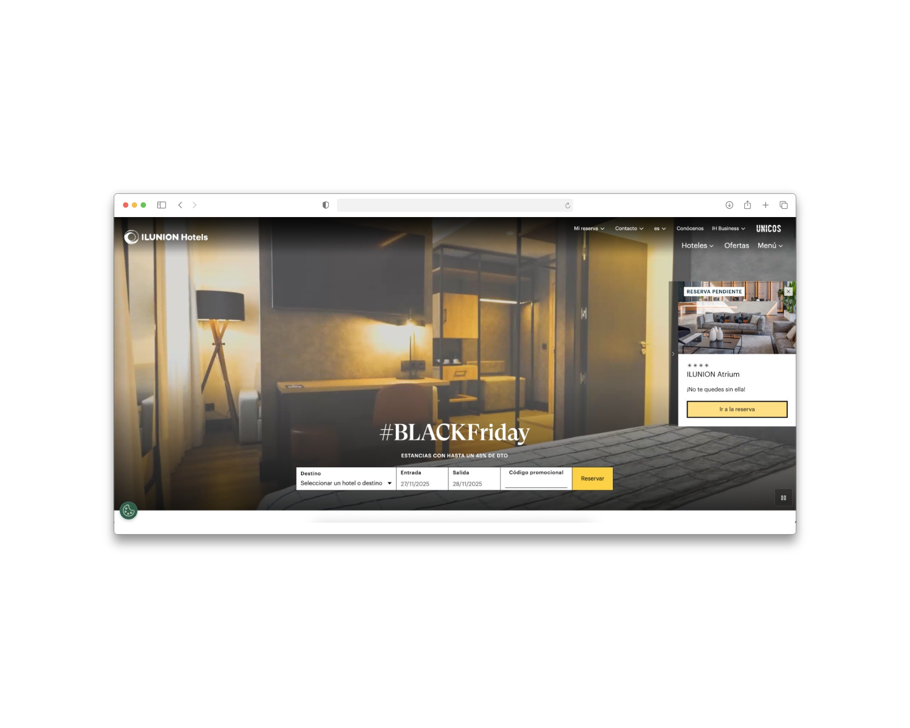
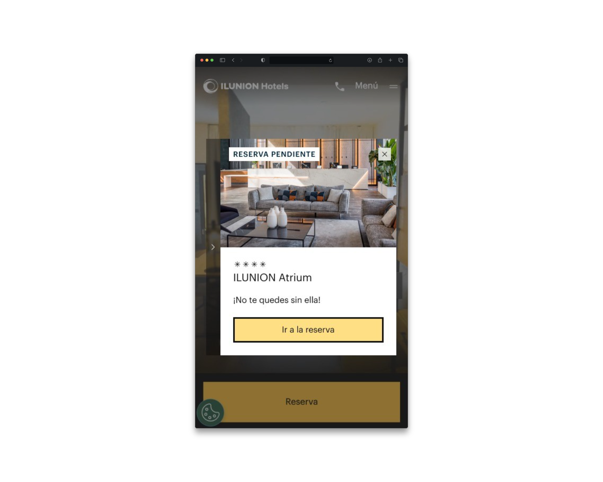
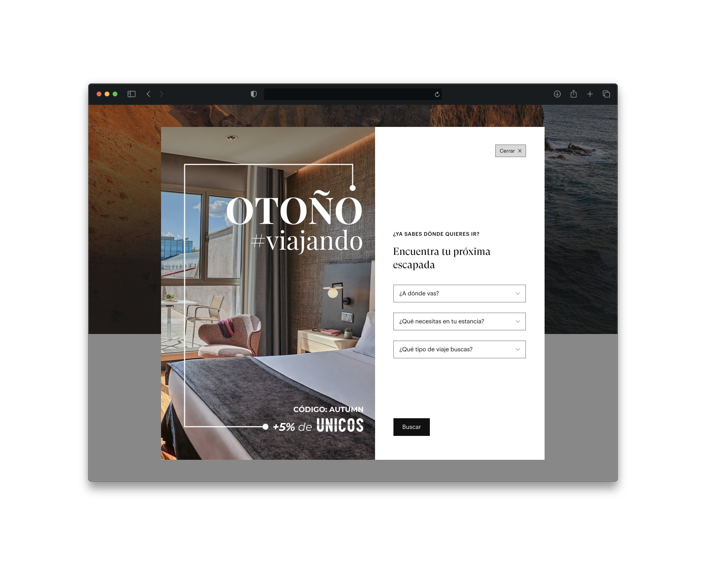
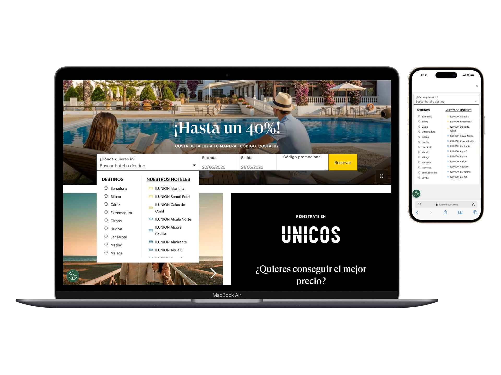

Investigación, estrategia y
rediseño del motor
Research & Análisis de comportamiento
Analicé el comportamiento mediante Microsoft Clarity y Adobe Analytics para cartografiar la profundidad de scroll, la fricción de clics y la tasa de rebote por dispositivo.


"El usuario no quería explorar primero. Quería comprobar disponibilidad lo antes posible."
Problem Framing y priorización de cambios
Existía un conflicto directo entre el modelo mental corporativo ("explora, descubre nuestra marca") y el modelo mental del usuario ("quiero ver disponibilidad y precios"). El rediseño debía transformar un escaparate en una herramienta de conversión eficiente.
Trade-offs gestionados: El rediseño operaba sobre un entorno en producción activo. AEM imponía limitaciones en la personalización de componentes según dispositivo. La solución tuvo que funcionar dentro de estos constraints reales.
Redefiní la jerarquía del acceso al motor priorizando: rapidez de identificación del buscador, claridad visual, reducción de fricción en el inicio de búsqueda y facilidad de interacción desde tráfico de alta intención.

Diseño por dispositivo y puesta en producción
Desktop: Acceso rápido al motor, visibilidad de fechas y ocupación, CTAs claramente expuestos. Mobile: Estructura simplificada para comportamiento táctil: reorganización vertical, reducción de elementos secundarios, optimización del primer scroll.
Trabajé directamente con el equipo de desarrollo en la definición funcional y validación en entorno staging. El objetivo no era entregar diseño visual, sino asegurar coherencia funcional, viabilidad técnica y correcta integración en AEM.


Tras el lanzamiento, el seguimiento con Clarity reveló un hallazgo inesperado: los usuarios utilizaban el buscador como herramienta de exploración de destinos, no únicamente como acceso transaccional. Este descubrimiento derivó en una nueva línea de trabajo estratégica: el diseño de landings específicas por destino con lógica de alta conversión. La diferencia entre hacer una entrega y hacer producto es exactamente esta: seguir mirando después de publicar.
Estados de Interacción y Lógica del Buscador
Estado Inicial (Empty State)
El motor muestra inputs por defecto (ej: "Selecciona destino"). Campo de fechas pre-rellenado con las del día siguiente.
Default inputs displayed (e.g. "Select destination"). Dates prefilled with tomorrow's parameters.
Foco y Sugerencias (Focused)
El usuario activa el input. Despliegue de autocompletado inteligente con los hoteles visitados recientemente y destinos top.
User focuses on input. Intelligent auto-complete reveals recently viewed hotels and top destinations.
Validación de Fechas (Validation)
Lógica de control: fecha de salida posterior a entrada. Si hay inconsistencia, aviso en vivo con tooltip accesible sin refrescar.
Control check: check-out date must be after check-in. Visual tooltip alert shown inline for invalid queries.
Envío y Carga (Search Triggered)
Bloqueo de doble clic en CTA mediante estado Loading. Redirección limpia al motor de reservas con parámetros en la URL.
Disable search button on double-click (loading state active). Clean redirection to search results page with parameters in URL.